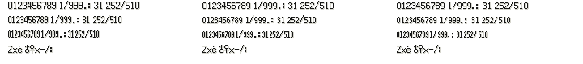

These are actual Pokémon World emulator captures at 240×160. A changes only the digits; B also changes the period, slash and colon. No production font binding changed.
All three compact font variants keep their original advances: SHORT 6px, SHORT_NARROW 5px and SHORT_NARROWER 4px for digits. Ink/shadow height drops from 10px to 9px. A changes 156 bytes across thirty glyph cells. All other glyphs, normal/small fonts, width tables and engine code are identical between capture ROMs. B changes 355 bytes across thirty-nine whitelisted cells.
The strip below crops the native emulator specimen. Columns: current / A / B. Rows: SHORT, SHORT_NARROW, SHORT_NARROWER, then unchanged NORMAL symbols. Diagnostic numeric strings include 999 and 252/510; no impossible Pokémon HP stats were invented.

Open 4× glyph strip · Per-glyph audit · Actual source call sites · Pixel differences
Each variant passed: study flows 12/12, renderer calibration 1/1, VerifyBagLayout 23/23, PromptSafetyEvIv 30/30, and VerifyPCScreen 10/10 — 228 assertions across three variants. The editor is an unchanged FONT_NORMAL control. VerifyPCScreen tests the building PC, while the separate study driver exercises actual storage UI and summary return flows.
Baseline: 45e1bf82, current SwSh UI, before #328. The owner explicitly authorized doing this study now. Refresh the final control captures if #328 or selected BW #336 materially changes these surfaces. BW outlined fonts and production font-ID work are excluded.
Report and reproduction · ROM and glyph manifest · Test results
{kind=link}